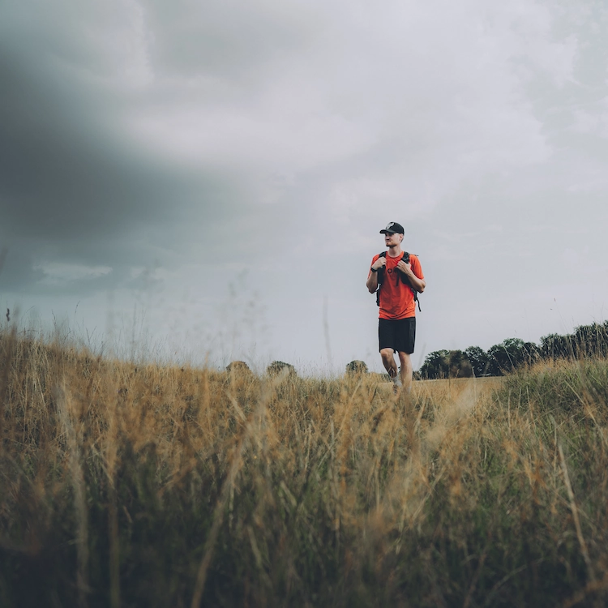

Multimediedesign er for mig den ultimative kombination af design og kommunikation. At kunne være kreativ og hjælpe folk med at fortælle deres historie igennem deres visuelle udtryk, er drømmen for mig o målet med uddannelsen. Som uddannet handelsassistent med speciale i B2B salg har jeg stort indblik i markedsføring og salgsværktøjer. Noget som jeg benytter mig meget af, i temaer som involverer konceptudvikling, cases og udvikling af brugergrænseflader.

Sportsbranchen
Det meste af min erfaring kommer efter mange år i ski- og mountainbike brancen. Her har jeg arbejdet for to mindre og mellemstore virksomheder. Det betød mere ansvar, og jeg fik muligeheden for at prøve en masse ting af, lige fra kundeservice og logistik, eventplanlægning, copy writing, produktion af content og vedlighold af website.
Marketing
Jeg har flere års erfaring med markedsføring. Til dagligt arbejder jeg som studentermedhjælper hos Gyldendal, i deres content team. Her producerer og udvikler jeg content til de forskellige brands under Gyldendal.
Kundeservice
Mine tidligere stillinger har også været fokuseret meget omkring kundeservice. Her var ekseptionel kundeservice alfa og omega, for virksomhedens koncept.
Fritid
I min fritid elsker jeg at fotografere og lege med de forskellige Adobe programmer. Der findes mange forskellige typer fotografi dog holder jeg mig mest indenfor disse:
Street
Sport
Biler
Det meste af mit arbejde kan findes på de sociale medier nedenfor.